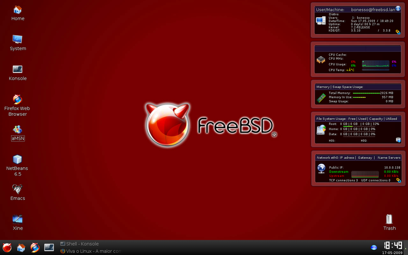

FreeBSD

Bem aqui chegamos em um nível bem complicado de apresentar, já que o FreeBSD não é tão conhecido, apesar de ser bem difícil
alguns confundem ele como uma distribuição Linux, mas na verdade ele é só um derivado do Unix mesmo.
História:
Tudo começa no anos 70, na universidade de Berkeley, evoluindo do UnixBSD, que logo em 1993 surgiu como um sistema operacional
completo e com código aberto, focado em estabilidade, desempenho e segurança para contornar disputas legais e oferecer uma alternativa
livre.
Bem antes de irmos para outras informações vamos entender a diferença entre o FreeBSD e do Linux:
Linux: É um kernel com licença GPL (Mais restritiva) Com grande versatilidade, usado em servidores e desktop's.
FreeBSD: Sistema completo e com licença BSD e claro o FreeBSD é mais conservador.
Lados positivos e negativos do FreeBSD:
Área de trabalho do FreeBSD para alguns que nunca viram:

Curiosidades sobre o FreeBSD:
1) O FreeBSD é usado pela netflix e playstation
2) A licença do FreeBSD é muito permissiva, permitindo uso comercial e modificações sem obrigar a abertura do cÓdigo fonte.
3) O mascote do FreeBSD se chama Daemon BSD que é um demônio azul inspirado nos demônios UNIX que cuidam de tarefas em segundo plano.
4) Componentes do FreeBSD são encontrados no MacOS e IOS.
5) O FreeBSD diferente do Linux é desenvolvido como um sistema operacional unificado (No caso: Kernel + drivers + utilitários).